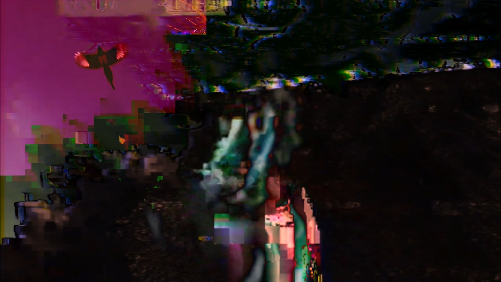

Å®†3ƒ@ç+ is a short dance film that uses digital glitch to explore degradation and generation loss across multiple mediums. It layers and blends footage of a body dancing with the fractal textures of natural elements like trees and birds, creating a dense lattice of flickering colour, branching light, and human forms, all buried in pastel washes of cascading residuum.
You can find it here in full! Enjoy!